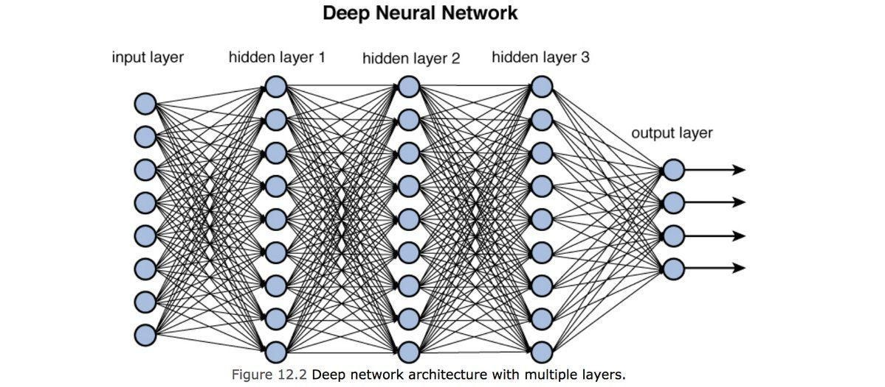

Senior Data Scientist specializing in building scalable AI and ML systems that solve complex problems and deliver measurable business impact.
My experience spans Fortune 500 enterprises and high-growth environments, where I’ve led projects ranging from
national-scale forecasting and reporting to applied GenAI solutions.
Expertise includes:
- Machine Learning & AI — supervised/unsupervised learning, NLP, LLMs, retrieval-augmented generation (RAG)
- MLOps & Engineering — drift monitoring, automated retraining, cloud deployments, workflow orchestration
- Data Platforms & Cloud — Palantir Foundry, Databricks, AWS (Lambda, EC2, S3), distributed computing with PySpark
I work closely with stakeholders across engineering, product, and leadership to design solutions that align with business needs while remaining technically robust.
From end-to-end ML pipelines to human-in-the-loop decision tools, I focus on building systems that are not only accurate but also practical and scalable.
I’m always exploring emerging technologies — including LLMs and intelligent agents — to stay ahead of the curve and unlock new opportunities for innovation.
ML/AI
- TensorFlow, PyTorch
- Scikit-learn, XGBoost
- Hugging Face Transformers
- LangChain, OpenAI API
- Computer Vision, NLP
- Deep Learning, Neural Networks
MLOps
- MLflow, Kubeflow, Airflow
- Docker, Kubernetes
- CI/CD Pipelines
- Model Monitoring & Drift
- A/B Testing Frameworks
- Feature Stores
Cloud & Data
- AWS (SageMaker, Lambda, EC2)
- Databricks, Snowflake
- Apache Spark, PySpark
- Palantir Foundry
- SQL, NoSQL, Vector DBs
- Real-time Data Streaming
Engineering
- Python, R, SQL
- Git, GitHub Actions
- FastAPI, Flask
- Microservices Architecture
- REST APIs, GraphQL
- Infrastructure as Code
Measurable Business Impact
95%
Model Accuracy Improvement
Enhanced forecasting models for national-scale reporting
$2M+
Annual Cost Savings
Through automated ML pipeline optimizations
50%
Deployment Time Reduction
Streamlined MLOps workflows and automation

üèóÔ∏è Concrete Strength Prediction System
End-to-end ML pipeline combining XGBoost and Deep Learning for material science applications. Features automated hyperparameter tuning and model selection.
Tech Stack: Python, TensorFlow, XGBoost, Bayesian Optimization

üè† Airbnb Market Intelligence Platform
Data-driven insights for NYC Airbnb market using advanced analytics and interactive dashboards. Revenue optimization recommendations included.
Tech Stack: SQL Server, Tableau, Python, Statistical Analysis

üè• Healthcare Sentiment Analytics Engine
Real-time sentiment analysis on healthcare reviews using web scraping, NLP, and automated reporting pipelines.
Tech Stack: Python, BeautifulSoup, NLTK, Pandas, REST APIs

üé¨ Entertainment Analytics Database
Scalable database architecture for movie theater operations with advanced analytics capabilities and performance optimization.
Tech Stack: SQL Server, MySQL, Database Design, ETL Pipelines

üì± Mobile App Market Analytics
Big data ETL pipeline for Google Play Store analysis using Databricks with predictive modeling for app success metrics.
Tech Stack: Databricks, PySpark, Python, Data Engineering, ML

ü߆ Neural Network Optimization Framework
Automated hyperparameter tuning using Bayesian Optimization for neural networks. Reduces training time by 60% while improving model performance.
Tech Stack: Python, TensorFlow, Bayesian Optimization, MLflow


{kind=link}